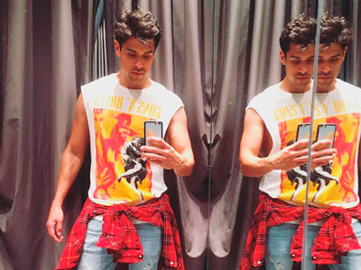
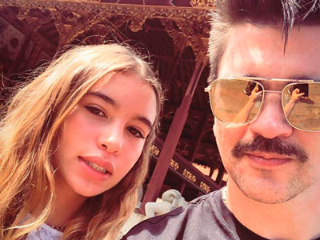
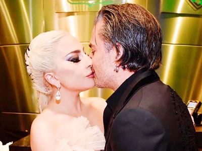

Actualidad

¡Lanzamiento The Katamarán!
Foto: Tomado de @ katamaranmusic
-Mala Idea- composición de Álvaro Rey Romero y Santiago Deluchi. Es una canción pop con influencias urbanas, con el sello de Brass Latinos y coros de Katamaran, con un lenguaje sarcástico y burlesco bien intencionado con la única finalidad de reírse de una situación cotidiana como el desamor; basado en una historia de la vida real.

In/Dios-In/Love
Foto: Tomado de @ natybotero
Naty Botero graba su álbum en medio de la naturaleza y por ende tiene una causa y un mensaje, uno de ellos es que por la venta de cada álbum sembrará un árbol en la Sierra Nevada, que cuidará durante tres años mientras crecen, el disco es un homenaje a todos los ritmos de la Costa Atlántica, Naty sigue trabajando con la fundación que ayuda a los indígenas de la Sierra y llevando su hotel en este mismo lugar.
¡Tremenda combinación!
Foto: Tomado de @maluma
Christian Nodal confirmó que estará lanzando un dueto con el cantante Maluma quien ya grabó la parte que le corresponde del tema que interpretarán juntos, será una canción muy romántica versión ranchera en compañía de mariachis, este colaboración se dio gracias a que el cantante colombiano subió hace unos meses un video en sus redes sociales en el que aparece cantando el éxito de Nodal -Adiós amor-.
¡Grave caída en pleno concierto!
Foto: Tomado de @karinashala
En plena presentación en la Tarima de Orquestas del Festival del Retorno en Acacías – Meta, la cantante Karina Shalá sufrió una fuerte caída al no darse cuenta que estaba al borde del escenario, desplomándose desde casi dos metros de altura, la cantante fue auxiliada por los asistentes y equipo logístico para luego ser valorada por el personal médico quien la remitió a la clínica Meta donde fue intervenida quirúrgicamente ya que presentaba varias contusiones. Karina anunció en sus redes sociales que tendrá que reprogramar las presentaciones que tenía agendadas y agradeció los mensajes de apoyo. “Esperamos la pronta recuperación de Karina”.

Nuevo Trabajo Discográfico
Foto: Tomado de @betovillamusic
Beto Villa Más Cerca es como se titula el nuevo álbum de este artista que asegura está hecho con el corazón y un equipo de trabajo de alta calidad, se llama así “porque mis fans, el público y las personas que comparten conmigo me pusieron así y creo que es porque se sienten cómodos hablando y compartiéndome sus vivencias así que decidí darle fuerza y quiero contarles que a lo largo del álbum vamos a ir mostrando canciones de situaciones humanas, cuando tienen amor, desamor, cuando no son correspondidos, cuando están felices o tristes, todo es basado en lo que viven las personas en torno al amor en general”.
¡Desamor y Despecho!
Foto: Tomado de @espinozapaz
Presentando su segundo sencillo de este año -Ellas así son-, el cantante de música popular Jessi Uribe, esta vez en compañía de una de las voces de despecho más importantes de Latinoamérica Espinoza Paz, un tema de desamor y despecho con el estilo que caracteriza a estos dos artistas. El video ya se encuentra disponible se grabó a las afueras de Bogotá. Los protagonistas son el presentador colombiano Mauricio Vélez y la modelo Carolina Toro. La química de este par ha sido enorme pues se tienen tanta confianza que ya se tienen apodos Espinoza llama a Jessi “Carita de porcelana” y Jessi llama a Espinoza “El Maluma boyacence”.
¡Cambio De Look!
Foto: Tomado de @majovargas1
Siendo una de las jóvenes más exitosas de la televisión colombiana, Majo Vargas es un referente de la moda y de las nuevas tendencias; hace unas semanas sorprendió a sus seguidores con un nuevo look adornando su cabello con trenzas de color gris, recibió elogios por su nuevo peinado.
¿Quién no recuerda La chica gomela?
Quién no ha escuchado este coro: “Que es lo que quiere la nena, que va pedir la princesa, que se le antoja a la reina, pídalo pronto chica gomela” tema icono de la música tropical en Colombia que no puede faltar en las fiestas. Esta canción -La Chica Gomela- junto a -Todo el Mundo Necesita un Beso- vienen en el segundo mosaico que Los Tupamaros Orquesta quieren entregarle a sus seguidores con un sonido más actual. “Hay que prepararse desde ya para las fiestas decembrinas”.
¡Hyllary junto a Altafulla!
Foto: Tomado de @hillarymusic
La artista de origen norteamericano Hillary nos presenta su más reciente sencillo musical -Más Fiesta- tema que realizó al lado del cantante barranquillero Andrés Altafulla, fue grabada en los estudios del reconocido productor Kano The Monsther, productor de grandes artistas. Con este sencillo Hyllary pretende llegar a todo tipo de público, mostrándonos su faceta como nueva artista femenina en el género urbano. -Más fiesta- es una canción para dedicar a esa persona que no supo aprovechar su oportunidad cuando alguien sincero decide entregar todo por amor.
!Voceros de las mujeres¡
Foto: Tomado de @pasabordo
Arriesgándose a componer un tema que hablara del momento difícil que muchas mujeres viven a diario. Jhonatan Hernández, Juan Gabriel Rodríguez mejor conocidos como Pasabordo junto a Noriel, Gangsta y Pablo Uribe quisieron ponerle voz a esta problemática para, que por medio de la música, las mujeres se empoderen y no sigan permitiendo cualquier tipo de maltrato. “Más allá de tener un tema pegajoso y bien producido, es un homenaje a ellas, quienes tienen derecho a ser libres y todo el derecho a luchar por ser felices” asegura Pasabordo.
!Enamorados¡
Foto: Tomado de @wilfrancastillo
Wilfran Castillo “El Cantautor de Éxitos” lanza hoy al mercado su nuevo sencillo y el video del tema -Enamorados- un himno para el amor. El tema es el primer sencillo de su nueva producción audiovisual, Lluvia Mágica. De este nuevo proyecto sobresalen los temas -Mi Bendición Eres Tú-, -Carta Del Verano-, -Te Extraño-, todos de la autoría de “W”.
El video de -Enamorados- fue grabado en la ciudad de Cartagena, con un ambiente romántico ésta canción con una historia de una pareja que celebra a ritmo de una inolvidable fiesta. Wilfran manifestó que Lluvia Mágica es un disco dedicado al amor: “Quiero que la gente dedique y se vuelva a enamorar con mis canciones”.
¡Netflix incluye en su serie “on my block” una canción del colombiano Karval!
Netflix incluyó en una de sus series originales la canción -Ya llegó- del artista colombiano Karval conocido por interpretar el género cumbia style, el cual gracias a él está volviendo a revivir en el país.
“Me siento muy contento que una canción compuesta por mi, además producción mía, sea escuchada por grandes productores televisivos y sea aprobada entre cientos de canciones para hacer parte de una serie juvenil americana, con la noticia de que fue incluida en la primera temporada, pero que además será incluida también para la segunda” afirma Karval.
Demandado por su ex pareja
Foto: Tomado de @perandresypalau y @miguelbose
Ignacio Palau , quien fue pareja de Miguel Bosé por 26 años, demandará al conocido artista español para poder seguir compartiendo la crianza de sus cuatro hijos, según informó un bufete de abogados y el diario El País. Palau, un escultor de cuya vida no han trascendido mayores detalles, les encargó interponer “las acciones judiciales necesarias para la defensa y protección de sus intereses y, fundamentalmente, los de sus hijos menores”.
¿Amy Winehouse volverá a los escenarios?
Foto: Tomado de @amywinehousethebest
Gracias al uso de hologramas en el 2019 arrancará una gira de tres años, en la que Amy Winehouse se presentará de manera póstuma. El anuncio de la realización de la gira lo hizo el padre de la cantante. Afirmó que la empresa Base Hologram se encargará de proyectar la imagen de la cantante en el escenario, frente a una banda en vivo. Usarán la voz de sus grabaciones originales y videos para hacerla ver lo más real posible. ¿Qué opinan?.
¡El reguetón en español es lo más sonado!
Foto: Tomado de @badbunnypr
En la canción -Mía- en colaboración con Bad Bunny, el cantante canadiense Drake demostró su talento y sorprendió a sus seguidores. Fue una sorpresa para los fanáticos de los artistas ya que no había sido anunciado con antelación. Drake se arriesgó con un sencillo de otro género y en otro idioma, entrando en el grupo de cantantes que ha tenido gran acogida por sus colaboraciones en español como Demi Lovato, Beyoncé y Selena Gómez.
¡Recibe siete récord guinness!
Foto: Tomado de @luisfonsi
Luis Fonsi, entró al libro de Guinness World Records, gracias a su canción ‘Despacito’ en compañía de Daddy Yankee. Esta canción recibió siete récords por su alcance mundial. Después de su publicación, en enero del 2017, la canción tuvo un éxito rotundo, es por eso que recibe reconocimientos por ser la canción más “escuchada del mundo”, ser el primer video en superar los 5.000 millones de visualizaciones en YouTube, ser el video con más likes en internet y la canción con más semanas en el número uno de la lista Billboard Hot Latin Songs. Adicionalmente, este sencillo rompió el récord de mayor número de semanas consecutivas (17) en el primer lugar de la lista Hot 100 de Billboard, el videoclip musical más visto de internet y el más reproducido de un dueto.

¡Luna se creció!
Foto: Tomado de @juanes
Luna Aristizábal cumplió 15 años, y ahora que alcanza muy bien el volante, su papá comenzó a darle clases de manejo. De hecho, fue el propio Juanes quien compartió un video en el que acompaña a su hija durante una lección, además le escribió en Instagram unas emotivas palabras.
“Me parece que fue ayer, cuando corría detrás de tu bicicleta enseñándote a montarla; hoy estoy a tu lado enseñándote a manejar carro”, comenzó diciendo el colombiano de 46 años y continuó, “como pasa el tiempo sin darnos cuenta y como crece este amor que se va volviendo eterno. Luna, te amo”.

¡Lady Gaga y su nuevo prometido!
Foto: Tomado de @ladygaga
La cantante Lady Gaga posó para la gala anual que organiza la revista ELLE, en ella comentó que Christian Carino es su prometido. De esa manera aclaró las preguntas sobre su anillo de diamantes el que ha usado en los últimos días, el afortunado prometido es agente de celebridades como: Justin Bieber, Miley Cyrus, Harry Styles y de la propia Gaga.